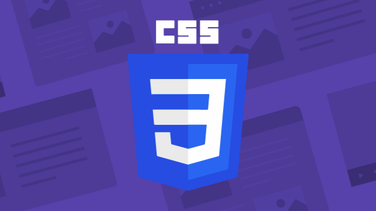

CSS
Pelajari CSS untuk mempercantik tampilan website dan membuat desain yang menarik. Di course ini, kamu akan memahami cara mengatur warna, layout, font, serta efek visual agar halaman web terlihat profesional dan responsif.
Daftar Materi
-
01Pengenalan Dasar20 min
-
02Dasar Penulisan CSS20 min
-
03Menyisipkan CSS ke HTML36 min
-
04Selector & Spesifisitas40 min
-
05Warna, Teks, dan Font12 min
-
06Background & Border40 min
-
07Ukuran, Box Model, & Display8 min
-
08Layouting Dasar25 min
-
09Flexbox (Modern Layout)18 min
-
10Grid Layout (2D Layout Modern)45 min
-
11Responsive Design & Media Query45 min
-
12Transition, Animation, & Transform45 min
-
13Variable & Custom Property45 min
-
14Pseudo-class, Pseudo-element, & State Styling45 min
-
15CSS Function & Unit Lanjutan45 min
-
16Project45 min
Detail Materi
Durasi
2.5 Jam
Total Materi
12 Modul
Tipe
Front-End
Tentang Materi
Course CSS ini dirancang untuk membantumu menguasai teknik styling pada website. Kamu akan belajar mulai dari dasar penulisan CSS, pengaturan tata letak dengan Flexbox dan Grid, hingga penggunaan animasi dan responsive design.
Cocok untuk pemula yang ingin meningkatkan keterampilan front-end atau siapa pun yang ingin membuat tampilan web lebih menarik dan modern.
Apa yang akan kamu pelajari?
- Memahami konsep dasar CSS dan cara menghubungkannya dengan HTML
- Mengetahui berbagai cara menyisipkan CSS: inline, internal, dan eksternal
- Menulis sintaks CSS dengan benar dan rapi sesuai standar
- Menguasai berbagai jenis selector dan memahami prioritas (specificity)
- Mengatur warna, teks, dan font dengan properti CSS modern
- Mengelola background, border, dan efek visual seperti gradient dan shadow
- Menguasai konsep box model, ukuran elemen, dan display
- Membangun layout menggunakan Position, Float, dan Flexbox
- Membuat layout kompleks dan responsif dengan CSS Grid
- Menerapkan responsive design menggunakan media query dan satuan fleksibel
- Menambahkan efek transisi dan animasi interaktif dengan CSS
- Menggunakan CSS variable dan custom property untuk tema dinamis
- Mengatur pseudo-class dan pseudo-element untuk efek hover dan state form
- Memanfaatkan function CSS modern seperti calc(), clamp(), min(), dan max()
- Menerapkan seluruh konsep CSS dalam mini project website modern